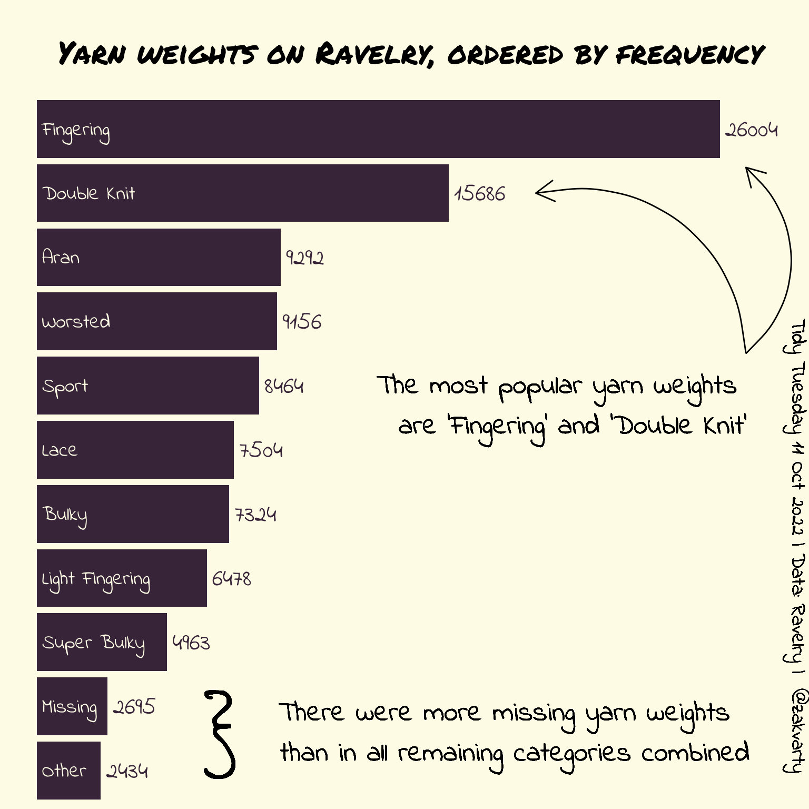

Code
# Load Packages ----
library(dplyr)
library(tidyr)
library(ggplot2)
library(forcats)
library(showtext)
# Load Fonts ----
font_add_google(name = "Indie Flower", family = "indie-flower")
font_add_google(name = "Permanent Marker", family = "marker")
showtext_auto()
# Load Data ----
url <- "https://github.com/rfordatascience/tidytuesday/raw/master/data/2022/2022-10-11/yarn.csv"
yarn <- readr::read_csv(file = url)
# Data Handling ----
other_weight_names <- c(
"Thread",
"Cobweb",
"Jumbo",
"DK / Sport",
"Aran / Worsted",
"No weight specified")
yarn_data <- yarn %>%
select(yarn_weight_name) %>%
mutate(yarn_weight_name = as.character(yarn_weight_name)) %>%
mutate_at(c("yarn_weight_name"), ~replace_na(.,"Missing")) %>%
mutate(name = fct_collapse(yarn_weight_name, Other = other_weight_names)) %>%
mutate(name = fct_collapse(name, "Double Knit" = c("DK"))) %>%
group_by(name) %>%
summarise(value = n())
# Helper data frames for adding arrows to plot
arrow_df_1 <- data.frame(x1 = 27000, x2 = 27000, y1 = 7.5, y2 = 10.4)
arrow_df_2 <- data.frame(x1 = 27000, x2 = 19000, y1 = 7.5, y2 = 10)
# Making Plot ----
bar_colour <- "#483248"
bg_colour <- "#FEFBEA"
title_font <- "marker"
main_font <- "indie-flower"
yarn_plot <- yarn_data %>%
ggplot(aes(y = reorder(name, value), x = value)) +
geom_bar(stat = "identity", fill = bar_colour) +
theme_void() +
ggtitle(" \n Yarn weights on Ravelry, ordered by frequency",subtitle = " ") +
theme(axis.title = element_blank(),
axis.text = element_blank(),
axis.ticks = element_blank(),
text = element_text(family = main_font),
plot.background = element_rect(fill = bg_colour, colour = bg_colour),
panel.background = element_rect(fill = bg_colour, colour = bg_colour),
plot.title = element_text(family = title_font, size = 22, hjust = 0.5)
) +
lims(x = c(0,28000)) +
geom_text(aes(label = name, x = 200),
color = bg_colour,
hjust = 0,
family = main_font,
size = 5) +
geom_text(aes(label = value),
hjust = 0,
nudge_x = 200,
color = bar_colour,
family = main_font,
size = 6) +
geom_text(aes(label = "The most popular yarn weights \n are 'Fingering' and 'Double Knit'",
x = 20000,
y = 6.7),
family = main_font,
size = 7) +
geom_text(aes(label = "There were more missing yarn weights \n than in all remaining categories combined",
x = 18000,
y = 1.6),
family = main_font,
size = 7) +
geom_text(aes(label = "}"),
x = 7000,
y = 1.5,
size = 19,
family = main_font) +
geom_text(aes(label = "Tidy Tuesday 11 Oct 2022 | Data: Ravelry | @zakvarty"),
x = 29000,
y = 4.5,
size = 5,
family = main_font,
angle = 270) +
geom_curve(aes(x = x1, y = y1, xend = x2, yend = y2),
data = arrow_df_1,
arrow = arrow(length = unit(0.03, "npc"))) +
geom_curve(aes(x = x1, y = y1, xend = x2, yend = y2),
data = arrow_df_2,
arrow = arrow(length = unit(0.03, "npc")))
yarn_plot
Code
# Exported as 8x8 inch pdf and 800x700 png
# (next time start by setting canvas size!)